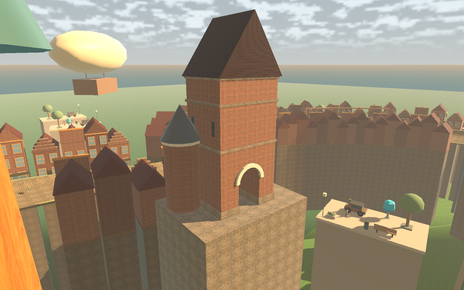
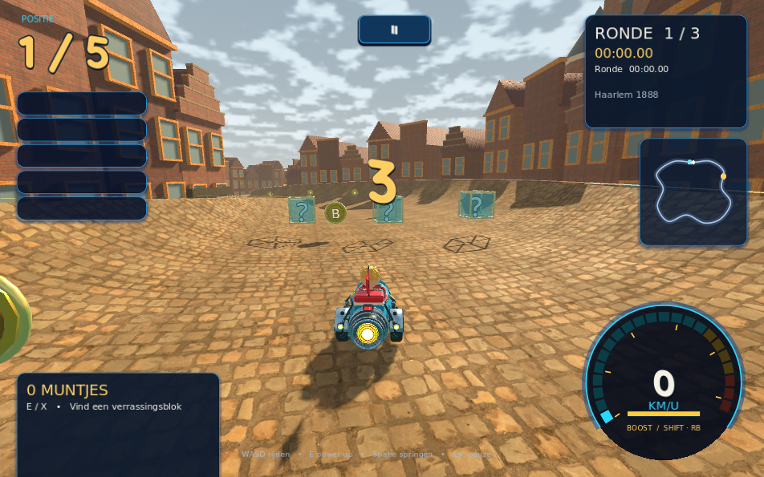
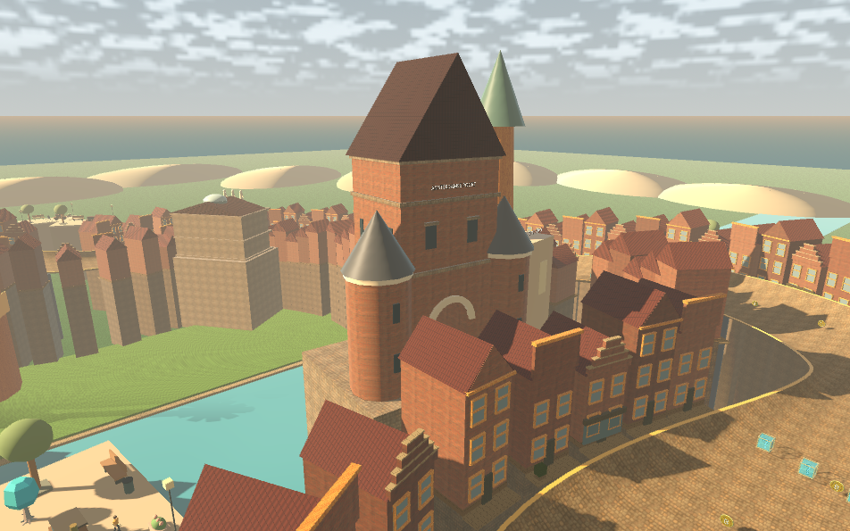
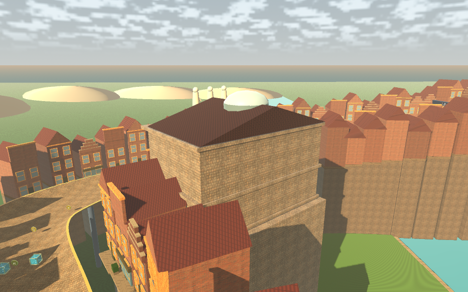
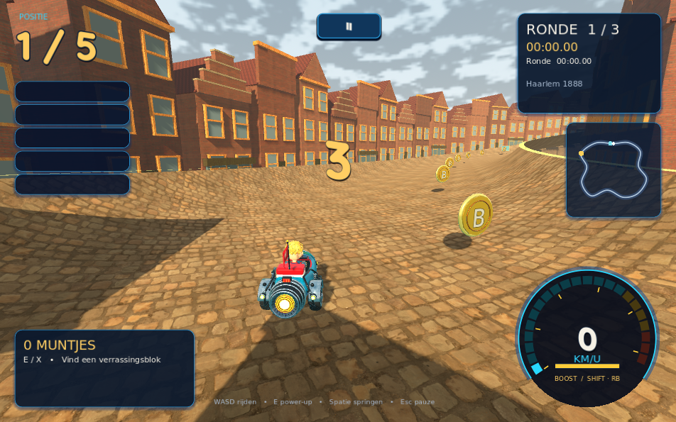
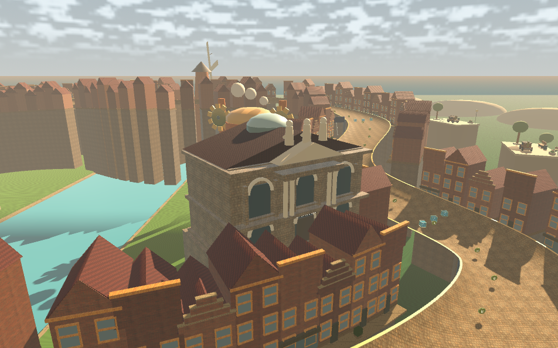

Native Godot · capture niet voltooid · metadata · log
Er zijn nog geen volledige enginebeelden. Gebruik het commando bovenaan deze pagina vanuit een grafische desktopterminal.
Godot Engine v4.7.2.stable.official.ed1daf0bf - https://godotengine.org OpenGL API 3.3.0 NVIDIA 580.178.04 - Compatibility - Using Device: NVIDIA - NVIDIA GeForce GTX 1050 LANDMARK CAPTURE amsterdamse-poort-voorkant LANDMARK CAPTURE amsterdamse-poort-achterkant LANDMARK CAPTURE amsterdamse-poort-racecamera LANDMARK CAPTURE teylers-museum-voorkant LANDMARK CAPTURE teylers-museum-achterkant LANDMARK CAPTURE teylers-museum-racecamera LANDMARK CAPTURES=6 failures=1 ERROR: Texture with GL ID of 41: leaked 87380 bytes. at: ~Utilities (drivers/gles3/storage/utilities.cpp:82) ERROR: Texture with GL ID of 45: leaked 87380 bytes. at: ~Utilities (drivers/gles3/storage/utilities.cpp:82)





